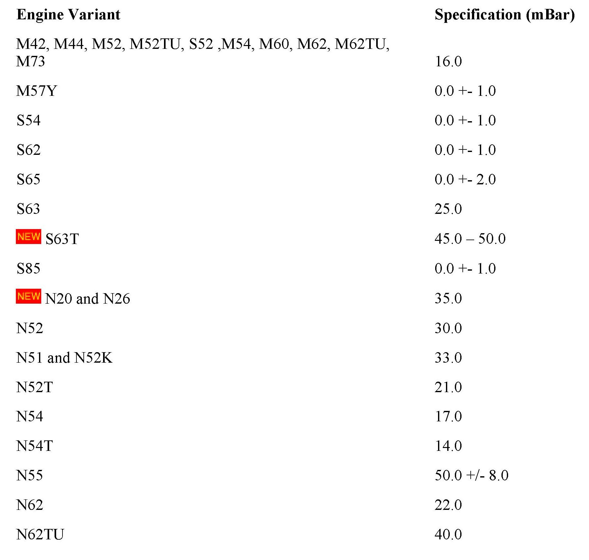
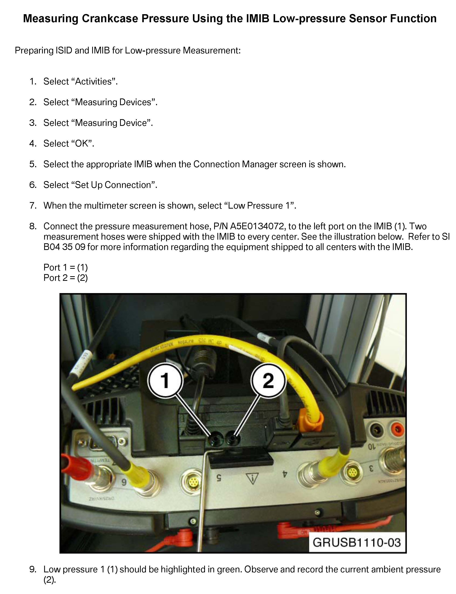
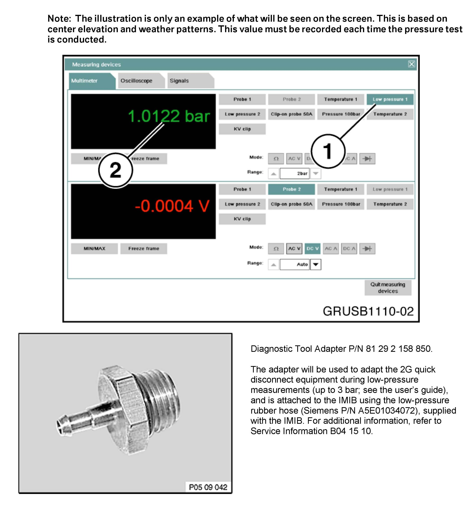
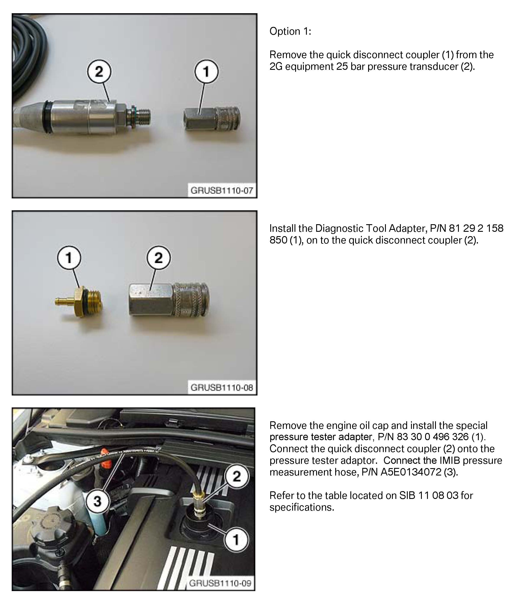
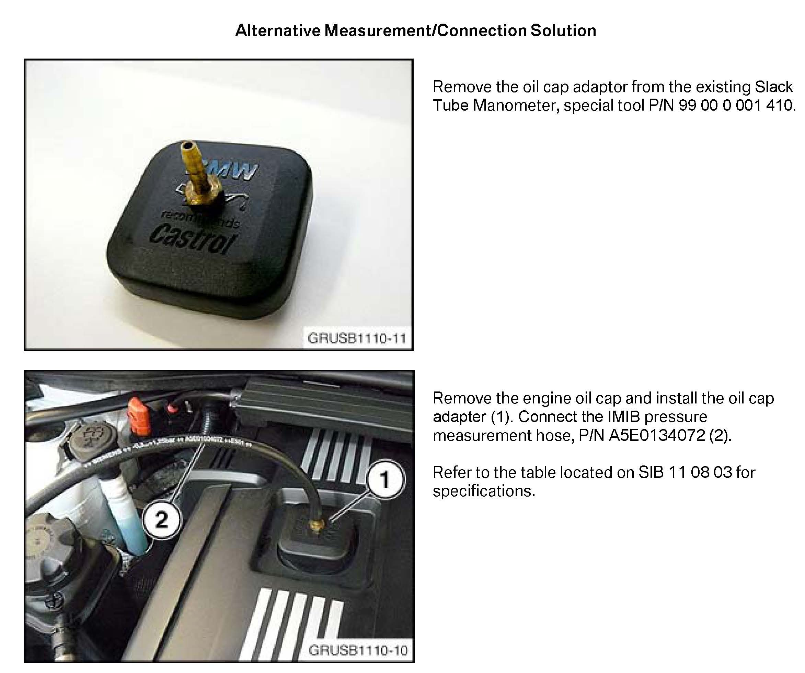

Emissions - Pressure Cont. Crankcase Ventilation Info.
SI B11 03 08Engine
March 2013
Technical Service
This Service Information bulletin supersedes SI B11 03 08 dated August 2011.
[NEW] designates changes to this revision
SUBJECT
Crankcase Ventilation System Diagnosis and Measurement
MODEL
All
INFORMATION
All current BMW engines incorporate a pressure-controlled crankcase ventilation system. The crankcase ventilation systems use various different crankcase ventilation valves, depending on the engine type. Although the valves all look different, they function similarly, using a spring and diaphragm assembly to control the crankcase pressure. A properly functioning pressure control valve is designed to maintain a slight vacuum (underpressure) in the crankcase, which assures reliable crankcase venting during all engine operating conditions. Some of the causes and results of a malfunctioning crankcase ventilation system are listed below.
Causes of Excessive Overpressure (Pressure)
^ Internal engine damage/wear
^ Obstruction in the crankcase ventilation system
^ Defective pressure control valve(s)
Results of Excessive Overpressure
^ Damage to the engine oil seals
^ Increased engine oil consumption (can be misdiagnosed as a defective turbocharger)
^ Excessive engine oil in the intake system
^ Excessive engine oil in the charged intake tubes or the intercooler on turbocharged engines (can be misdiagnosed as a defective turbocharger)
^ Engine oil dip stick is dislodged from the guide tube (if equipped)
Cause of Excessive Underpressure (Vacuum)
^ Defective pressure control valve
Results of Excessive Underpressure
^ Damage to the engine oil seals
^ Increased engine oil consumption
^ Excessive engine oil in the intake system
^ Rough engine idling or engine misfire
^ Whistling or howling noise from the engine (can be misdiagnosed as a defective turbocharger)
^ Increased mixture adaptation values
Attached to this Service Information bulletin is a procedure for measuring the crankcase ventilation system, using the ISID and IMIB diagnostic equipment.

[NEW] Specification and actual readings from the vehicle may vary by up to +/-10%, but not more than 5.0 mBar. Various measuring tools may provide results that are not within specification. All measurements below were recorded using the IMIB. See the attachment for IMIB connection hints.
WARRANTY
[NEW] Not applicable.
ATTACHMENTS




view PDF attachment B110308_Measuring_Crankcase_Pressure_Using_IMIB.